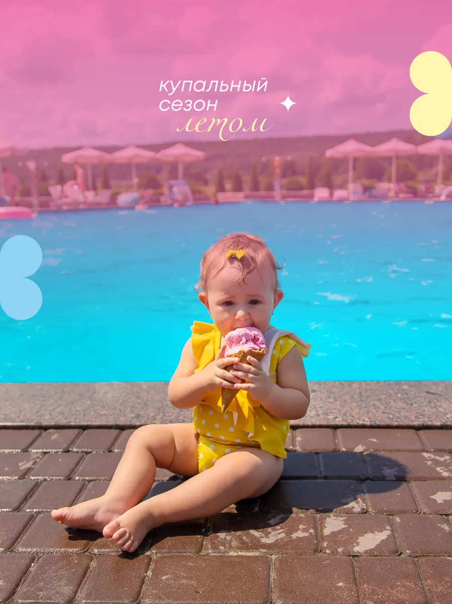
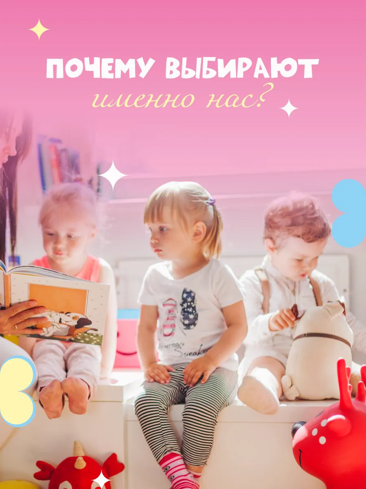

Летний сезонЛетом малышей ждёт особый сезон: купание в бассейне, игры на свежем воздухе, творчество и приключения каждый день. Присоединяйтесь! ☀️
Частный развивающий садик в Ташкенте для детей от 1 до 7 лет — от раннего возраста до подготовки к школе. Помогаем раскрыть способности, развить самостоятельность, уверенность в себе и любовь к обучению.

Всё, что нужно малышу, чтобы расти счастливым, здоровым и любознательным.
Каждый день — это игры, занятия и маленькие открытия. Загляните, как у нас проходит время. ✨
Понятный ритм дня: занятия, прогулки, отдых и пятиразовое питание — всё вовремя.
Время ориентировочное и может немного меняться по возрастным группам. ☀️
Выберите удобный формат — а мы поможем малышу расти счастливым.
Оставьте малыша на несколько часов под присмотром воспитателей — без обязательного посещения полного дня. В программу входят игры, развивающие занятия, прогулки и питание (в зависимости от времени пребывания). Формат — разовое посещение.
Возможна оплата помесячно. Точную стоимость для вашего возраста уточним по телефону. 💛
Нам доверяют самое дорогое — и это лучшая награда. Вот несколько тёплых слов от наших семей.
Сын идёт в садик с радостью и не хочет уходить вечером! Каждый день фото и отчёт в Telegram — я всегда спокойна за малыша. ✨
Дочка заговорила на английском первыми словами уже через пару месяцев. Педагоги внимательные, тёплая домашняя атмосфера.
Очень нравится разнообразие занятий — шахматы, танцы, робототехника. Ребёнок развивается и при этом счастлив. Спасибо вам! 💛
Искали садик с заботой для самых маленьких — и нашли. Пятиразовое питание, маленькие группы, всё как дома.
Логопед помог сыну с речью буквально за курс. Видно, что к каждому ребёнку индивидуальный подход. Рекомендую от души!
Дочка обожает утреннюю гимнастику и прогулки. Приятно видеть её улыбку каждый вечер. Лучший садик в районе! ☀️
Собрали то, о чём родители спрашивают чаще всего. Не нашли свой вопрос — просто позвоните. 💛
Остались вопросы? Позвоните или запишитесь на экскурсию — покажем всё лично.
Будем рады познакомиться лично — позвоните, напишите в Telegram или просто загляните.